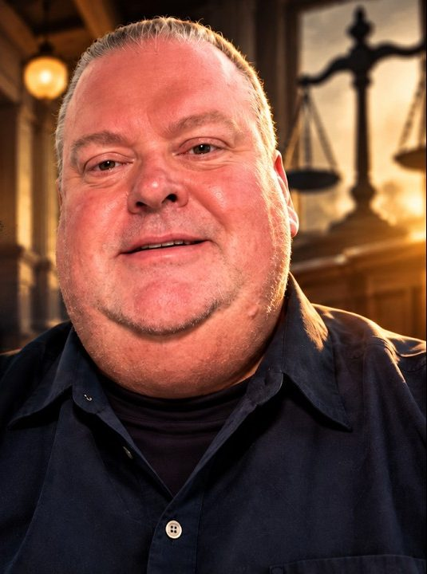

Children's best interests must remain central.
This Is Personal. Because It Happened to Me.
I'm Clinton. I'm a father, and my experience with family court changed the way I see the challenges families can face when a relationship ends.
What began as a personal family matter became a journey through difficult legal proceedings, custody challenges, and the emotional weight of fighting to remain present in my children's lives.
My case eventually reached a resolution, but the questions it raised didn't end there. I began to realize that other fathers may be facing similar struggles, often without knowing where to turn or how to make their experiences heard.
That's why I created Dad's Day In Court: to share my story honestly, open up conversations about what happens inside family court, and encourage people to look more closely at how these experiences affect parents and children.
This isn't about claiming that every father is right or every mother is wrong. It's about recognizing that every family's circumstances are different, that children's best interests must remain central, and that the experiences of parents deserve to be understood.
My case ended. My story didn't.
Read My Story